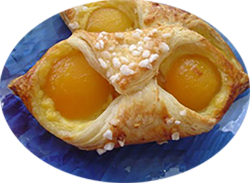

Oranais

Pour 6 personnes
Préparation : 15 mn
Ingrédients
- 1rouleau de pâte feuilletée
- 1 boîte d’abricots au sirop
- Confiture d’abricot
- 1 jaune d’œuf
- Sucre en poudre ou en grain
Crème pâtissière
- 25 cl de lait
- 1 sachet de sucre vanillé
- 55 gr de sucre en poudre
- 20 gr de maïzena
- 2 jaune d’oeufs
Recette
- Coupez la pâte feuilletée en 6 rectangle (étirez un peu les bords arrondis pour formez des rectangle).
Ce n’est pas grave si les coins ne sont pas points
Préparez la crème pâtissière :
- Faites bouillir le lait avec le sucre vanillé
- Faites blanchir les jaunes avec le sucre et ajoutez la Maïzena, mélangez
- Versez le lait bouillant dessus en fouettant.
- Remettez dans la casserole et faites épaissir à feu doux sans cesser de fouetter. Verser dans un récipient et laissez refroidir
- Egouttez les abricots en conservant 1 cuillère à soupe de jus à incorporer à la crème pâtissière
- Déposez les abricots égouttés sur du papier absorbant afin qu’ils s’égouttent parfaitement
- Etalez un peu de crème pâtissière sur chaque rectangle en évitant deux des coins
- Répartissez 3 orillons d’abricots dessus puis, repliez les coins l’un sur l’autre en les badigeonnant de jaune d’œuf
- Badigeonnez le dessus des oranais avec du jaune d’œuf, saupoudrez de sucre en poudre ou en grains
- Enfournez 15 à 20 mn à 180°
- Faites chauffer à feu doux un peu de confiture d’abricot et nappez les oranais avec un pinceau
|